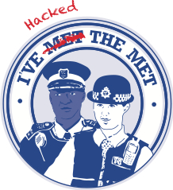

The Hackathon Playbook
A hackathon is an event that brings together experts and creates a collaborative environment for solving a certain problem. This playbook is focused on data-driven, technical hackathons that aim to produce novel digital tools and prototypes, rather than non-technical events, such as those hosted by Policy Lab, which focus on ideation and systems thinking.
These hackathons should focus on bringing together data and expertise from within and across departments, linking together disparate datasets in novel ways to generate impactive insights or identify opportunities to improve government through technology and automation.
This playbook walks you through the key steps in running a hackathon. It is a set of guidelines/patterns that have proved effective, so feel free to vary according to your needs!
Before you start planning, make sure a hackathon is the right answer to your challenge: they are open, collaborative events, that aim to rapidly crowd-source technical solutions to a specific theme or question. Do you have a narrow question (such as linking two datasets or forecasting an outcome), or a digital solution already in mind (like a new digital platform for your staff)? Consider a sprint or project instead! As a rule of thumb, if you already have a good idea what your winning entry might look like, then a hackathon probably isn’t the most effective way of getting to it
Master Checklist
In a rush? Make sure you have the below done!
- A theme - policy or problem to focus on that will deliver impact
- A venue - make sure it’s big enough for people to present, but also allows people to focus on work in teams
- A Senior Champion to excite, policy experts to inform, and practitioners to explain the data
- A senior panel of “dragons” to act as judges and pick your winners
- Datasets that have not been linked before, have not been available before, or have not been exploited in a particular way (this should be fun and exciting, not just redoing your day job!)
- Necessary data access thought through and agreed (ensure any legal or data protection challenges are covered)
- A broad mix of participants with the right mix of skills for your event, a way of ticketing and organising them into teams where they can complement each other (eg, by preferred programming language)
- An analytical environment where people can collaborate and work on their data (ideally using R, Python, or other open source tooling in line with best practice around government analysis)
- An end of hack event/panel with prizes and next steps!
We’ve found a strong panel of senior judges and well laid out venue for your event are those tasks that are most crucial to do early: no matter how exciting your theme is, you’re not going to find a room for a hundred participants to hack in or be able to book a minister for an afternoon of judging if you ask from one week to the next! Make sure secure a spacious venue with a layout that suits your participants, and a mix of technical participants with the senior and technical “oomph” to judge and energise as early as you can.
Before the Event
Identifying a Challenge
Hackathons are most impactive when thematically focused on a problem or challenge, enabling participants to create their own innovative solutions in a collaborative way rather than pre-empting them. While the exact problem is up to you, it should be exciting and maximise your opportunity for impact.
As such, you might want to consider:
- What are your main departmental/governmental priorities?
- Which datasets exist, internally and externally?
- Where do you think new data or tools could deliver most benefits?
- Which key questions would you like answered in an ideal world?
- Where do you have most internal expertise - such as practitioners or policy makers - that you could bring together?
If you can, answer these questions in a pre-event workshop. Bring together a core team of analysts and practitioners and ask what data is available, what they wish was available, and what questions they’ve always wanted to tackle. Hackathons are opportunities to expose your senior leaders to the art of the possible and try new things, so don’t be afraid to aim high.
Most importantly, make sure the key question and challenge is new and exciting - if your analysts are just repeating tasks they’ve been asked to do in their day job, it’s not a hackathon!
Your challenge will define your event, so make sure it’s something you believe in, and use it to guide what comes next. Is it a highly technical challenge in a well understood field, or a broader ask in a niche policy area? It might need different participants, different judges, different facilities or different data, but they should be informed by your key challenge.
Identifying Participants and Datasets
Within or Cross Department?
Hackathons will likely deliver maximum impact by bringing together as diverse a range of participants with previously unseen data. Cross-government events will encourage broad participation, likely bringing in new methods and expertise, but this must be balanced with data security considerations.
As such, this should be decided early on in collaboration with the primary departmental partner, while giving consideration to the range of participants, available planning time, and data sets most likely to generate value.
Participants
A successful hackathon is dependent on a broad range of participants, with a balanced mix of domain knowledge and technical expertise - in effect, a balance between coders/data-scientists, policy staff who understand the broader strategic challenge, and “coal face” expertise who understand how the data is generated and used and what will deliver impact on the front-line.
If you can run a pre-hackathon workshop, you have a great opportunity to identify potential participants: think about other experts who may have a stake in your data, or may be involved in its creation or use.
Depending on the topic and data sensitivity, you could even reach out to partners outside government - are there interested academics, private sectors organisations or non-governmental organisations who have expertise and a stake in your problem? Now is a great opportunity to bring them into the room and see what data they can bring to bear on our problems.
Communicating
Prior to the event, regular communication should take place to encourage a good number of diverse participants - the exact nature of the communications will vary based on the scope and target of the event.
Think about what you can do to make your event seem like an exciting opportunity, rather than an rather same-y cross-government meeting - can you produce some nifty graphics, or set up a welcoming external web-page people can be directed to? The whole point of hackathons is to bring diverse people into a room, so make sure you tune your communications to achieve that!
If you do put together any nifty graphics, consider how you can use them to generate some excitement on the day! Posters, signs, fancy illustrations - you’re aiming to create a physical space that communicates the just important your challenge is, so make sure you think about how you produce those well in advanced (as well as any other swag you might want to offer out!)

Nifty graphics don’t have to cost the world (from Police Rewired)
Unless your hackathon is completely internal to your department, think about your public presence… how are people going to be invited to the event? Consider a public facing web-page, or at an easily available FAQ with basic details about what a hackathon is and what you’re hoping to achieve.
Once you have a well designed public presence, think about where and how you can communicate it - who are you trying to reach, and how can you appeal to as many of them as possible? Consider cross-government communities and networks, such as the Gov Data Science Slack or reaching out through appropriate civil service professions.
Data and Information Sharing
The most meaningful impact from government hackathons will take place when exploring data in novel ways, and as such will generate some information risk.
Right Data for Right Questions
Where possible, interesting, detailed datasets will generate the most value - hackathons are small, focused events with a controlled audience, so any data you work with can be made available. The key question is what data can you provide, and how useful will it be?
Consider pre-preparing your data - nobody wants to spend the first 12 hours figuring out which of a hundred columns is most useful!
Managing Information Risk
If using identifiable or sensitive data, you should secure a commitment in principle with senior Data Protection officers as soon as feasible.
The exact steps you take to secure your information will be informed by your theme, your department, and the datasets you are working with, but could include:
- Limiting the event to vetted department staff
- Ensuring the data is deleted at the conclusion of the event
- Working on a specific secure analytical environment (either physical or secure cloud)
Depending on your department and topic area, you will have different obligations around how to manage your legal obligations and information risk. These will likely include consideration of a Data Protection Impact Assessment, but may include other department specific policies.
Any data risks should be heavily mitigated by the contained nature of your hackathon, and your senior champion should be able to support you in minimising the work in completing these processes, while still managing any risks.
For cross-government events, a collaborative approach should be agreed between Data Protection Officers - for example, this could include:
- A joint statement from all DPOs covering the event
- A central DPIA for the hosting department, with bespoke additional DPIAs created for additional departments providing data using their processes.
If you’re struggling to complete your DPIA, don’t be ask to reach out for help! Over time, we’ll aim to put together a database of best practice and template examples.
Tooling
The exact nature of your tooling will depend on what is available internally, and the sensitivity of your data. At a minimum, this should provide collaborative access to open-source, reproducible analytical tools (such as R and/or Python) in line with government analytics guidance, either locally or in the cloud.
If such tooling is not available internally, you may be able to seek support for a temporary solution through your internal technical team or 10DS.
There is no perfect answer to the tooling question, so be prepared for a open discussion with your technical and data protection teams, and reach a healthy compromise between data security and maximising the opportunities of collaboration.
Do none of these options work for you? We can help! No solution is always perfect, but we’ll do our best to offer advice and connect you to other who have made it work across government
Cloud
Where possible, hackathons should use an existing internal analytical environment that enables collaborative coding (for example, the MoJ Analytical platform) to reduce any concerns around data sharing.
If such a platform does not exist, you may be able to spin-up a temporary, pre-packaged solution in your government secure cloud - this will vary based on your infrastructure, but as a minimum this could be a managed cloud analytical notebook, such as Amazon Sagemaker, Google Collaboratory and Azure Databricks, or an instance of RStudio Cloud or JupyterHub
If none of these options are feasible, you may wish to consider existing cross-government cloud analytics solutions, either obtaining guest access to existing analytical platforms where this is possible (such as MOJ or BEIS), or looking at cross-government offerings such as the ONS Integrated Data Solution or the Home Office ACE Vivace platform.
Physical
Where a cloud solution is not feasible, you may wish to consider a “local” solution. At it’s most basic, this could involve installing Anaconda or R Studio on secure laptops provided for the event, but depending on local availability, you may be able to build a more sophisticated local analytics environment - for example, by hosting notebooks through JupyterHub and version control through GitLab on a local server.
Location
While a hackathon can take place virtually, a physical location will force collaboration and focus, and so should be identified as early as possible.
Ensure your chosen location has enough essentials for your audience! This could include:
- power sockets
- toilets
- snacks and plenty of water
- accessible entrances
Rooms
While the minimum requirements are to provide a large enough space for your participants to work, and so this could be accomplished in most civil service venues, were possible a few key work environments are beneficial:
- Networking / Collaboration space: Helpful for ideation and team-building, one or more large, open plan environments that can enable participants to mingle, talk about project ideas, and identify other groups forming that may be of interest
- Team “deep work” space: Small offices or similar where teams can discuss and plan their projects, and conduct more “deep work” such as coding.
- Conference/Theatre space: For team presentations, “dragons den” and senior stakeholder inputs, a large conference room like space where all the participants can gather, with appropriate audio-visual facilities.
Hybrid working can work, but we’ve found it can impede some of the earlier ideation and collaboration stages, so make sure as many participants as possible are physically collocated during the event.
Equipment
The minimum requirements for a hackathon will always be participants and their laptops! However, there are key pieces of equipment you can provide (beyond the physical location) to enable collaboration and participation.
- Whiteboard / Flipcharts: ideally provided during ideation sessions and during team deep-work, these help encourage discussion and visualising prototypes
- Post-it-notes (with colours!)
- Displays: Large (eg, television sized) displays to encourage teams to show off their work to each other and senior stakeholders - these can either be fixed (eg, in the team work space) or mobile
Optional Extras
Food
Whether you provide food will be down to you, but we’ve found a communal pizza is an effective way to let participants relax, decompress and chat about their ideas! If you do decide to provide food, ensure you’ve considered dietary needs and allergens.
Swag
A hackathon’s legacy is built on word-of-mouth, and nothing encourages that more than swag! Consider if you can make cheap and cheerful gifts for your participants to leave with - we’ve found printed stickers especially popular (and they’ll act as advertising on laptops for years to come), but mugs, pens, or whatever you have on hand to make participants feel welcome is always a welcome extra.
Attendance and Ticketing
To run an effective and safe hackathon, a ticketing or signup solution will be needed to monitor who is attending, control access, and ensure you have a healthy balance of skills. Use whatever solution is available (eg, Eventbrite or Quill) to maximise participation while ensuring event security and capacity.
You should try and understand the mix of technical skills available in your audience - this will vary based on the your policy area, but we’ve previously tried to ensure at least two thirds of participants are technical (eg, data scientists or developers). This can be done at the ticketing stage by limiting tickets by type (eg, hacker vs practitioner) or afterwards using surveys, and you may wish to understand your participants level of technical knowledge, and particular areas of expertise or policy interest.
(Optional) Team Formation
Depending on time-scales, you may wish to start constructing teams after ticketing, but before the event has begun, to maximise coding time - however, this runs the risk of forcing participants into a project they would not otherwise choose, and limiting the collaborative benefits of “ideation” (though these will be limited if your event is not cross-department).
Keep teams small and nimble by following the two-pizza teams rule! We’ve found that large teams can struggle to focus on delivering something nimble, so don’t be afraid to break them up - these are teams, not comittees!
If you do pre-organise your teams, consider a pre-event survey to ascertain participant’s primary analytical tool (eg, R or Python), level of experience, area of expertise (eg, geospatial, NLP) to try and engineer well balanced, productive teams, using a tool such as Google Forms or Microsoft Forms.
During the Event
Welcome
Your priority is to keep the event high-energy and excitement, while setting the scene, explaining the key challenges and desired outputs - an enthusiastic presentation by your senior stakeholder can really help here! Make sure your participants get a good sense of mission, impact, and get excited about what they’re going to achieve.
Don’t forget to cover your key security and health and safety obligations here.
Setting the Scene
A few introduction talks can be beneficial to maximise participants ability to deliver during the event - these can broadly be divided into to themes
- Explain the Challenge (thematic) Senior stakeholders, policy experts and practitioners should explain why these challenges are important, and put a human face to a data problem.
- Explain the Data (technical) To limit time taken exploring or misunderstanding the data, a walkthrough of the available data-sources, what they mean and how they’re generated is beneficial.
Team Building and Ideation
Team formation (unless this has been done in advance) should focus on challenges and opportunities, rather than technical solutions - “I want to solve problem A using B”, rather than “I want to build a thing that does Y with Z”, although these lines will always be blurry.
Where possible, this benefits from giving participants the opportunity to mingle and talk in a large social space - give them sticky notes, whiteboards, etc, ideally focused around some of the outputs from your “setting the scene” talks. Encourage people to swap ideas, chat to senior champions and practitioners, move between groups, and be as fluid as possible.
Your task here is to ensure groups remain balanced, and nobody ends up feeling like the odd-one out! There’s nothing wrong with a mix of group-sizes, but ideally you don’t want anybody left all on their lonesome at the end.
Hack Begins!
It’s time to start turning that enthusiasm and excitement into impact! Give your participants good, uninterrupted time to focus on work. Exactly how long is up to you and your hackathon design, but we’ve found a good event will generally run over two or three days.
While you should avoid disrupting your participants’ ability to work, you should encourage some breaks, and give the participants the ability to sanity check their ideas and have them challenged by senior champions and practitioners. Encourage your senior champions to “drop in” on groups and see their prototypes, and you may also want to encourage formal “Q&A” sessions with policy leads or similar.
If possible, ensure a social/networking space is available - for instance, if you have a conference/amphitheatre type room can it be kept available for teams to relax and show off their work on the big screen, or is there a kitchen space for them to mingle over a cup of tea?
(Optional) Drop-in sessions
Consider sprinkling drop-in sessions throughout the day(s). These could be:
- Relevant policy colleagues
- Operational colleagues / service users
- Strategy
- Domain-specific data experts
- Datavis experts (to suggest/help make engaging visualisations)
- Data engineers (to help snag any data piping / transformation / augmentation issues)
(Optional) Prep them to present
Give a 10-15 minute talk on i) how to present well and concisely to senior decision makers, ii) how to use visuals/data visualisations to have impact, iii) what the panel will want to get from the presentations.
On iii), in the past we have suggested answering these questions:
- What question did you try to answer?
- What did you find?
- How could you build on it with more time or additional data?
- Are there any other next steps that you would recommend?
We also recommend that, if time, the people that give this talk on how to present drop in with each team to give feedback on their developing presentations ahead of any final panel.
Ending your Event
A strong finish is crucial to a good hackathon: it gives your participants a chance to take a breather, reflect, and show off what they’ve accomplished to senior champions, hopefully starting the road to meaningful change.
Your Judges
Identify your ideal judging panel early, and make sure they have the time to commit to your event - this isn’t something where you can sneak in half-way through! We’d recommend a diverse, senior panel that can understand the technical challenges your participants have overcome, as well as what it might be able to achieve in the wider context… for example, here is a good example of a three person panel:
- A senior strategic leader: A minister/commissioner/permanent secretary, who might not understand the technical aspects of your solution, but can understand just how much impact it might have on their sticky, “wicked” problems they haven’t been able to solve internally
- A senior technical champion: Someone with a grip on the technical challenges, and just how your solution addresses them - for example, a Head of Data Science/infrastructure
- An external guest: An inspiring external guest with domain knowledge or an understanding of the challenges the sector faces can add some useful diversity and context - for instance, this might be a senior representative from a private sector partner, or a charity working on the problem
Excellent judges can make or break a hackathon, so take care of your panel! You should have a panel of eminent, inspirational experts that will wow and inspire, have the technical chops to challenge your participants and the strategic vision to know which nascent prototype will grow a product that drives large scale change. Pick them wisely, and make sure your participants know just how lucky they are to have them.
Identifying Winners
Once your event is over, it’s time to crown some champion(s)! Each team should be given an opportunity to present their work, ideally to a panel of your senior champion in a “dragon’s den” format. We’ve found short, impactive demo presentations (eg, limited to 3-5 minutes) followed by questions to be a good balance, but this will depend on the nature of your event… if you’ve gone very large, you may want to use a digital solution like Gavel.
Be very strict with time for presentations and set people up to start the next presentation quickly.
It is likely you’ll get a range of outputs, from feasible MVPs to rough wireframe concepts - that’s fine! The point of a hackathon is to explore potential solutions, not build finished products, so make sure participants don’t leave dispirited or compare themselves too harshly. As such, you may want to consider a broad range of prize “categories” (eg, most impactive, most novel, best use of X), rather than being incredibly competitive. We’ve found a good fit is to have a showstopper “Grand Prize”, a winner per main “challenge” (eg, best way of tackling X, best visualisation), and a whole host of honourable mentions.
If you can, consider whether you can offer some unique and meaningful (and cheap!) prizes.
What Next?
Deliver Change!
While a hackathon can be useful in and of itself, government events should lead to meaningful change, so make sure you’ve got a plan! Nothing is more dispiriting than producing a fantastic prototype, only to see senior leaders aren’t willing to commit to taking the idea any further. Ideally, a senior leader would commit to formally supporting some of the winning products, and have a plan to take them forward. Congratulate your participants, and make sure they know their activity will lead to impact!
Spread the Word
Now you’ve completed your hackathon, make sure to tell the world about it! Make sure to publicise your success both inside and outside your department. For example, you might want to consider an internet article, podcast, or even a more formal briefing note.
Lessons for next time
If the event went well, somebody will probably be asked to run it again next year…so make sure they’re not starting from square 1! Store notes, lessons learnt and outputs in a repository, and make sure it’s accessible… the better your documentation, the less you’ll be asked back to run it all over again.